Ductho Le
University of Alberta, Edmonton, Alberta, Canada
Email: ductho.le@outlook.com
Ultrasonic guided wave inspection is a powerful technique for non-destructive evaluation (NDE) of structures such as pipelines, aircraft components, and composite materials. A key challenge in this field is the inverse problem: determining material properties (thickness, elastic moduli, density) from measured wave signals. Traditional approaches rely on iterative optimization coupled with physics-based forward models, which can be computationally expensive and time-consuming.
Deep learning offers a promising alternative by learning direct mappings from signal representations to material properties. However, training deep neural networks on the large-scale datasets typical in guided wave research presents significant engineering challenges: datasets often exceed available memory, multi-GPU training requires careful synchronization, and domain-specific metrics need integration with standard training pipelines.
This paper introduces WaveDL (Wave Deep Learning), an open-source Python framework specifically designed to address these challenges. WaveDL provides: (1) a memory-efficient data pipeline using memory-mapped files that enables training on datasets larger than available RAM; (2) an architecture-agnostic design allowing researchers to easily integrate and compare different neural network architectures; (3) robust distributed training support with proper synchronization across multiple GPUs; and (4) physics-aware metrics that track prediction accuracy in meaningful physical units.
WaveDL is built on PyTorch and HuggingFace Accelerate, supports mixed-precision training for improved performance, and includes comprehensive experiment tracking through Weights & Biases integration. The framework is available under the permissive MIT license at https://github.com/ductho-le/WaveDL.
Keywords: deep learning framework, guided wave inversion, distributed training, high-performance computing, memory-mapped data, multi-GPU synchronization, neural network regression
Program Title: WaveDL
Developer's repository link: https://github.com/ductho-le/WaveDL
Licensing provisions: MIT License
Programming language: Python 3.11+
Nature of problem:
Ultrasonic guided wave inversion requires determining material properties (thickness, elastic moduli, density) from measured wave signals or their 2D representations (dispersion curves, spectrograms). Traditional iterative optimization methods coupled with physics-based forward models are computationally expensive, often requiring hours per inversion. Deep learning enables direct mapping from signals to properties with millisecond inference time. However, training neural networks on the large-scale simulation datasets typical in this domain (50,000–500,000 samples, exceeding 100 GB) presents significant computational challenges: datasets exceed available RAM, multi-GPU training requires careful synchronization to avoid deadlocks, and domain-specific metrics in physical units are needed for interpretable results.
Solution method:
WaveDL implements a zero-copy memory-mapped data pipeline using NumPy memmap, enabling random-access training on datasets larger than available RAM without performance degradation. A decorator-based model registry pattern allows researchers to integrate arbitrary neural network architectures (CNNs, Vision Transformers, etc.) without modifying the training infrastructure. Distributed Data Parallel (DDP) utilities provide synchronized early stopping across multiple GPUs, preventing the deadlock conditions that occur when only one process decides to terminate. Physics-aware metrics automatically compute Mean Absolute Error in original physical units by applying inverse standardization, enabling direct assessment of prediction accuracy in millimeters, meters per second, or other domain-relevant units.
External routines/libraries:
PyTorch (≥2.0), HuggingFace Accelerate (≥0.20), NumPy (≥1.24), SciPy (≥1.10), scikit-learn (≥1.2), pandas (≥2.0), matplotlib (≥3.7), tqdm (≥4.65), Weights & Biases (≥0.15, optional)
Restrictions:
The framework is designed for multi-output regression tasks on 2D input representations. Classification tasks or 1D/3D inputs require modifications to the data pipeline and loss functions. Training requires NVIDIA GPU with CUDA support; CPU-only inference is supported.
Ultrasonic guided waves are elastic wave modes that propagate within bounded media such as plates, pipes, shells, and layered composites. Unlike conventional bulk ultrasonic waves that travel through the material thickness, guided waves can propagate over extended distances (tens to hundreds of meters) while remaining sensitive to structural features throughout the waveguide cross-section [1, 2]. This unique property makes them invaluable for the rapid inspection of large-scale infrastructure including pipelines, railway tracks, aircraft fuselages, and wind turbine blades.
The physics of guided wave propagation is governed by the elastic wave equation in bounded media. For an isotropic plate of thickness , the displacement field satisfies:
where is the mass density, and , are the Lamé constants related to the longitudinal () and shear () wave velocities. The boundary conditions imposed by the traction-free surfaces give rise to a family of discrete wave modes (Lamb waves in plates, torsional and longitudinal modes in pipes) whose phase velocity depends on the frequency-thickness product . This relationship, known as the dispersion curve, encodes the material's mechanical properties and geometry.
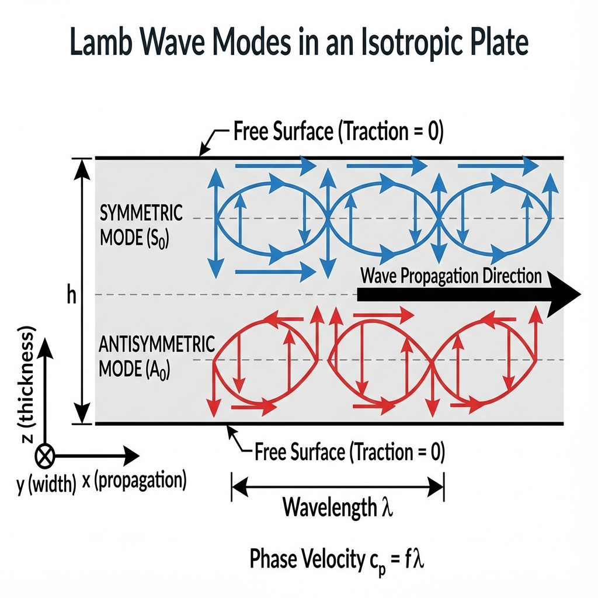
The fundamental challenge in guided wave-based material characterization is the inverse problem: given an observed set of dispersion data (e.g., a frequency-wavenumber spectrum or time-frequency representation), determine the material property vector that produced it.
Formally, let denote the forward operator that maps material properties to observable dispersion data . The inverse problem seeks the operator such that:
This problem is well-posed in the Hadamard sense only under specific conditions [3]. In practice, noise, incomplete mode identification, and model-data discrepancies introduce ill-posedness, requiring regularization techniques.
Traditional solution approaches fall into two categories:
Iterative Optimization: Given an initial guess , iteratively refine to minimize the objective:
where is a regularization term. Methods include Levenberg-Marquardt, genetic algorithms, and particle swarm optimization. These require repeated forward model evaluations (seconds to minutes each for complex layered media), making real-time inversion impractical.
Look-up Tables: Pre-compute for a dense grid in parameter space and perform nearest-neighbor matching. While fast at inference, this approach scales poorly with the number of parameters (curse of dimensionality) and provides only discrete solutions.
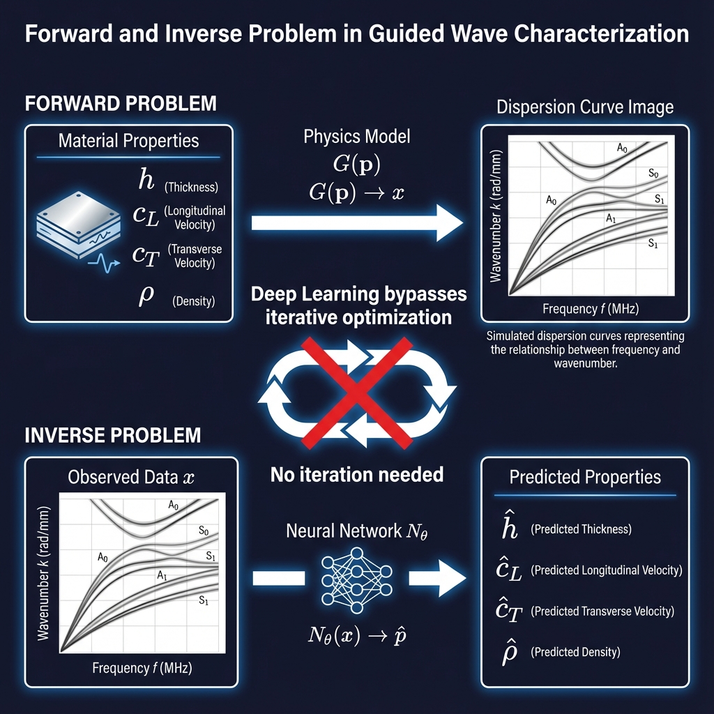
Deep neural networks offer a fundamentally different approach: learn the inverse mapping directly from paired examples . Once trained, the network approximates:
with inference latency of milliseconds on GPU hardware. This paradigm shift has been demonstrated across diverse physics domains including seismic inversion [4], electromagnetic inverse scattering [5], and ultrasonic NDE [6-8].
However, the transition from proof-of-concept studies to production-ready research tools remains challenging due to three fundamental computational barriers:
Data Scale: Accurate surrogate models require training on vast synthetic datasets () generated by physics-based forward solvers. For 2D dispersion images of size pixels, a 100,000-sample dataset consumes approximately 100 GB—exceeding the RAM of standard GPU nodes (typically 32-64 GB).
Distributed Training Complexity: Leveraging multi-GPU High-Performance Computing (HPC) clusters introduces synchronization challenges not addressed by standard deep learning boilerplates:
Domain-Specific Interpretability: General-purpose frameworks report normalized loss values (e.g., MSE on standardized targets), which are meaningless to domain scientists. Physicists and engineers need errors expressed in physical units ( mm thickness accuracy, m/s velocity tolerance).
The application of deep learning to guided wave problems has accelerated rapidly since 2018. Key developments include:
Damage Detection and Classification: Rautela and Gopalakrishnan [6] provided a comprehensive review of Lamb wave-based damage detection using CNNs and recurrent networks. Their analysis highlighted that 2D time-frequency representations (spectrograms, scalograms) consistently outperform raw 1D waveforms as network inputs due to the explicit encoding of dispersive behavior.
Inverse Characterization: Miorelli et al. [7] demonstrated supervised deep learning for ultrasonic crack characterization using synthetically generated training data from finite element simulations. They achieved sizing accuracy comparable to expert human inspectors while reducing inference time from minutes to milliseconds.
Physics-Informed Approaches: Zhang et al. [8] integrated physics-based loss terms derived from Lamb wave dispersion equations into neural network training, improving generalization to out-of-distribution samples. Raissi et al. [9] pioneered Physics-Informed Neural Networks (PINNs) as a general framework for solving forward and inverse problems involving PDEs.
Despite these advances, most published studies rely on custom, single-use training scripts that lack generalizability, documentation, and community support. There is a clear need for standardized, validated software infrastructure.
Several general-purpose frameworks exist for neural network training:
PyTorch Lightning [10] abstracts boilerplate code and provides distributed training support, but imposes an opinionated project structure that may conflict with research workflows. It does not provide domain-specific utilities for physics applications.
Keras/TensorFlow [11] offers high-level APIs but lacks native support for memory-mapped data loading and has weaker multi-GPU debugging tools compared to PyTorch.
MONAI [12] is a domain-specific framework for medical imaging that includes specialized data transforms, network architectures, and loss functions. While highly successful in its niche, it is not applicable to guided wave problems.
Hugging Face Accelerate [13] provides lightweight distributed training utilities without imposing structural constraints. WaveDL builds upon Accelerate while adding physics-aware features specific to wave inversion.
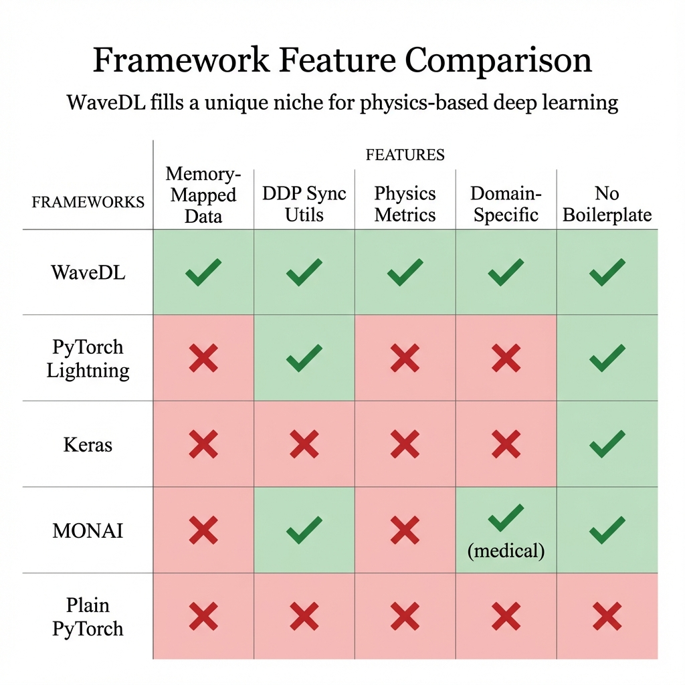
To date, no framework has been designed specifically for the computational requirements of guided wave inverse problems: out-of-core data loading, physics-aware metrics, and HPC-ready distributed synchronization.
WaveDL addresses the identified gaps through five principal contributions:
Zero-Copy Memory-Mapped Data Pipeline: A thread-safe data loading system that enables training on datasets exceeding available RAM by leveraging OS virtual memory management. Unlike generic PyTorch IterableDataset approaches, our implementation correctly handles multiprocessing worker initialization to prevent file descriptor sharing.
Decorator-Based Model Registry: A compile-time dependency injection pattern that allows researchers to register arbitrary neural network architectures without modifying the training loop. This promotes fair comparison of different models under identical training conditions.
DDP-Safe Synchronization Primitives: Utility functions that broadcast early stopping decisions, aggregate metrics across processes, and coordinate checkpoint saving—resolving the deadlock and race condition issues endemic to naïve distributed implementations.
Physics-Aware Metric Tracking: Automatic computation of Mean Absolute Error in original physical units (mm, m/s, GPa) by applying inverse standardization transformations, enabling direct assessment against engineering tolerances.
Production-Ready Engineering: Mixed-precision (BF16/FP16) support, PyTorch 2.x compilation compatibility, Weights & Biases experiment tracking, and robust checkpoint/resume functionality—features essential for HPC deployment but often missing from research code.
The remainder of this paper is organized as follows: Section 3 details the computational methodology, including the mathematical formulation of the data pipeline and distributed synchronization algorithms. Section 4 describes the reference architectures and extensibility mechanisms. Section 5 presents comprehensive experimental validation, and Section 6 concludes with a discussion of the software's impact and future directions.
WaveDL is designed as a modular, high-performance training engine that decouples physical modeling (neural network architecture definitions) from computational infrastructure (data loading, distributed synchronization, training loops). This separation of concerns enables researchers to focus on scientific innovation while leveraging battle-tested engineering components.
The framework follows a layered architecture pattern:
utils/data.py): Memory-mapped I/O, caching, and standardizationmodels/): Registry pattern with abstract base classtrain.py): Accelerate-based distributed training looputils/): Metrics, visualization, and distributed primitivesThis modular design enables independent testing and replacement of components. For example, researchers can substitute the default StandardScaler with a RobustScaler for outlier-heavy datasets without modifying other layers.
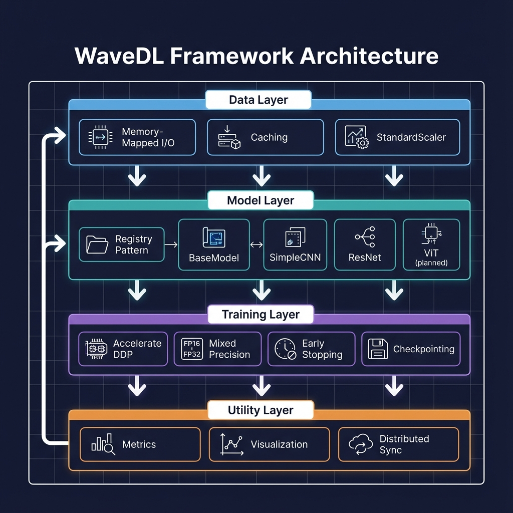
Let be a dataset where is a multi-channel 2D representation (e.g., dispersion image) and is a vector of material properties. For typical guided wave applications with samples and pixels, the memory footprint is:
This exceeds the RAM of standard GPU nodes (typically 32-64 GB). Furthermore, even when RAM is sufficient, loading 100 GB into memory requires approximately 10-15 minutes at typical HDD speeds (100 MB/s), creating unacceptable startup latency for iterative development.
Memory mapping creates a virtual address space that mirrors the file on disk. The operating system's virtual memory manager handles page-level access:
This mechanism provides memory complexity (independent of ) and amortized access time per sample due to caching.
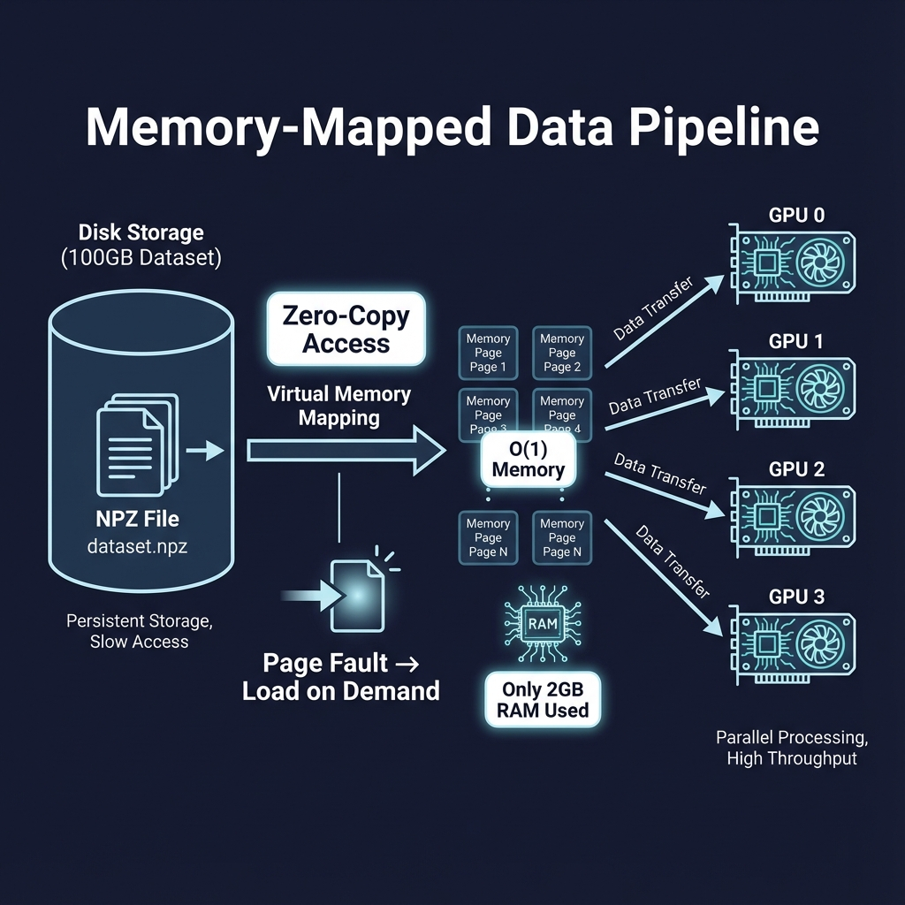
Algorithm 1: Memory-Mapped Dataset Initialization and Access
PROCEDURE Initialize(file_path, shape, dtype):
// Phase 1: Validate metadata (main process only)
IF NOT file_exists(file_path):
RAISE FileNotFoundError
// DO NOT open memmap here - file descriptors not safe across fork()
self.file_path ← file_path
self.shape ← shape
self.dtype ← dtype
self.handle ← NULL // Lazy initialization
PROCEDURE WorkerInit(worker_id):
// Phase 2: Called by each DataLoader worker after fork()
self.handle ← NULL // Force re-open on first access
PROCEDURE GetItem(index):
// Phase 3: Lazy handle acquisition
IF self.handle IS NULL:
self.handle ← mmap(self.file_path, mode='r', shape=self.shape, dtype=self.dtype)
// Critical: copy() detaches tensor from memory-mapped buffer
data ← self.handle[index].copy()
RETURN tensor(data)
The .copy() operation in Phase 3 is essential. Without it, the returned tensor shares memory with the mapped buffer, causing:
Space Complexity: The memory-mapped approach achieves space complexity where is the batch size, compared to for in-memory loading. This enables training on datasets of essentially unlimited size, constrained only by disk capacity.
Time Complexity: Individual sample access is amortized. Cold-start access (first touch of a page) incurs disk I/O latency (~5-10 ms for HDD, ~0.1 ms for NVMe SSD). Modern OS prefetching and sequential access patterns minimize cold-start overhead during training.
I/O Throughput: For batch size with bytes per sample, each batch requires MB. On NVMe storage with 3 GB/s read bandwidth, theoretical maximum is ~23 batches/second. In practice, GPU computation time (~50-100 ms/batch for typical CNNs) exceeds I/O time, making training compute-bound rather than I/O-bound.
In Distributed Data Parallel (DDP) training, each GPU runs an independent copy of the training loop. PyTorch's DDP synchronizes gradients via all-reduce operations during the backward pass. However, control flow decisions (such as early stopping) are not automatically synchronized.
Consider the following failure scenario:
Time | Rank 0 (Main) | Rank 1
-------|----------------------------|---------------------------
t=100 | val_loss = 0.01 | val_loss = 0.01
t=101 | patience = 20 (stop!) | patience = 19 (continue)
t=102 | exit training loop | forward() → wait for gradient sync
t=103 | (terminated) | DEADLOCK: waiting forever
Rank 0 exits the training loop because its stopping condition is satisfied, but Rank 1's forward() call in the next iteration triggers gradient synchronization, which waits indefinitely for Rank 0's participation.
WaveDL implements a broadcast-based synchronization protocol. Let be the local stopping decision at rank :
The global stopping decision is computed via an all-reduce (MAX) operation:
All ranks then check before proceeding to the next epoch. Since the all-reduce is a collective operation, all ranks must participate, ensuring no deadlock:
Time | Rank 0 (Main) | Rank 1
-------|----------------------------|---------------------------
t=100 | S_0 = 1 (stop!) | S_1 = 0 (continue)
t=101 | all_reduce(S_0) → 1 | all_reduce(S_1) → 1
t=102 | S_global = 1 → exit | S_global = 1 → exit
t=103 | (synchronized exit) | (synchronized exit)
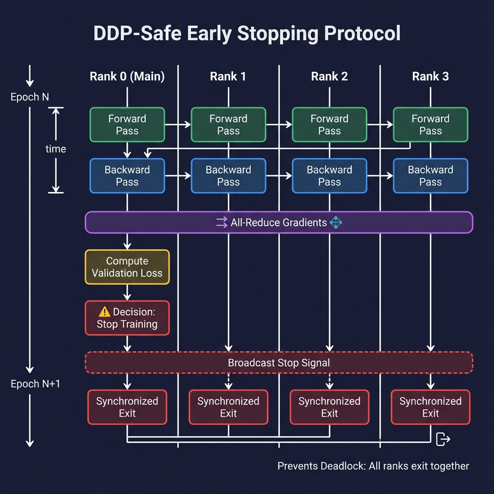
When computing global metrics across GPUs, naïvely averaging per-GPU averages produces incorrect results if batch sizes differ:
Incorrect:
Correct (sum-of-sums / sum-of-counts):
where is the total loss on rank and is the number of samples processed by rank . WaveDL's sync_tensor utility performs this reduction correctly.
To facilitate fair architecture comparison, WaveDL employs a Factory Pattern with decorator-based registration. This design:
"ratenet") rather than class importsRegistry API:
# Registration (in models/ratenet.py)
@register_model("ratenet")
@register_model("simplecnn")
class SimpleCNN(BaseModel):
...
# Usage (in train.py)
model = build_model(args.model, in_shape=(500, 500), out_size=2)
The BaseModel abstract class enforces a consistent interface:
| Method | Purpose |
|---|---|
__init__(in_shape, out_size, **kwargs) |
Constructor with required dimensions |
forward(x) → y |
Forward pass mapping input to output |
parameter_summary() → dict |
Parameter count and memory footprint |
get_optimizer_groups(lr, wd) → list |
Differential learning rates for fine-tuning |
This interface ensures that:
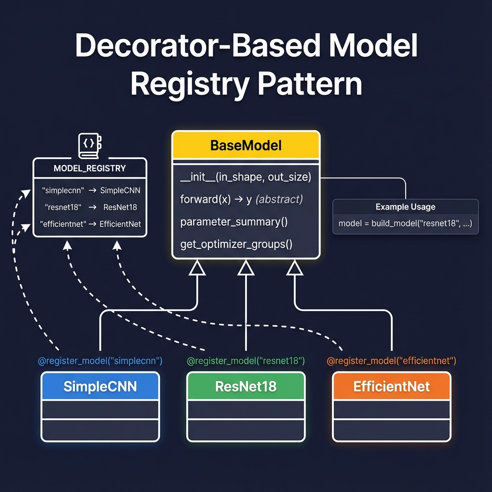
Neural network training benefits from standardized targets with zero mean and unit variance. Let denote the -th target of sample . The standardization transform is:
where and are computed on the training set only to prevent data leakage. The fitted StandardScaler is saved with the checkpoint for use during inference.
Reporting error in standardized units is meaningless to domain scientists. WaveDL automatically converts metrics to physical units:
For multi-target problems, errors are reported individually:
This enables direct comparison against engineering tolerances (e.g., "Is thickness error within mm?").
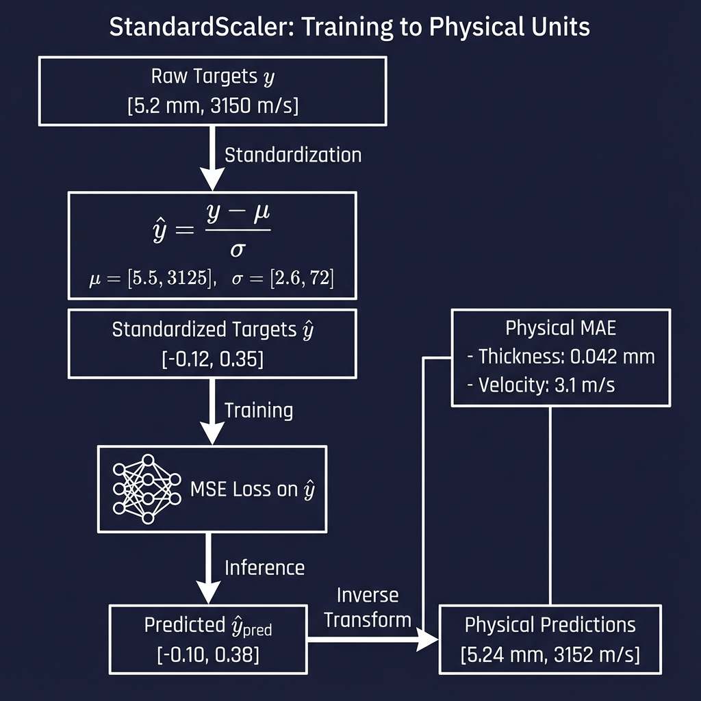
To ensure reproducibility and clarity, we provide the core implementation logic for the memory-mapped pipeline and distributed synchronization.
Listing 1: Thread-Safe Memory-Mapped Dataset
class MemmapDataset(Dataset):
"""
Zero-copy dataset for large-scale physical simulations.
Args:
memmap_path (str): Path to the binary memmap file.
shape (tuple): Dimensions of the complete dataset (N, C, H, W).
dtype (str): Data type (default: 'float32').
"""
def __init__(self, memmap_path, targets, shape, dtype='float32'):
self.memmap_path = memmap_path
self.targets = targets
self.shape = shape
self.dtype = dtype
self.data = None # Lazy initialization handle
def __getitem__(self, index):
# Lazy loading: Open file handle only on first access
# This ensures each worker process has its own file descriptor
if self.data is None:
self.data = np.memmap(
self.memmap_path,
dtype=self.dtype,
mode='r',
shape=self.shape
)
# .copy() is critical to detach from the memory buffer
# and prevent shared memory race conditions during augmentation
image = torch.from_numpy(self.data[index].copy())
target = self.targets[index]
return image, target
Listing 2: DDP-Safe Early Stopping
def broadcast_early_stop(should_stop: bool, accelerator) -> bool:
"""
Synchronize early stopping decision across all GPU ranks.
Args:
should_stop (bool): Local decision from the main process.
accelerator: HuggingFace Accelerate handler.
Returns:
bool: Harmonized decision (True if any rank decided to stop).
"""
# Convert boolean to tensor for broadcasting
device = accelerator.device
stop_tensor = torch.tensor(int(should_stop), device=device)
# Broadcast decision from Rank 0 to all other ranks
if accelerator.num_processes > 1:
# Use reduce to handle edge cases where non-rank-0 might trigger stop
torch.distributed.all_reduce(stop_tensor, op=torch.distributed.ReduceOp.MAX)
return stop_tensor.item() > 0
WaveDL's registry pattern is designed to support a wide variety of neural network architectures. The framework ships with baseline implementations and is architected for seamless integration of popular pre-trained models from the computer vision literature. This section describes the included reference architectures and the extensibility mechanisms for adding new models.
The current release provides two built-in architectures:
SimpleCNN (simplecnn): A lightweight convolutional neural network suitable for baseline experiments and rapid prototyping. It serves as a template for custom model development.
Additional architectures (planned): The modular design supports integration of established architectures including ResNet [20], EfficientNet [21], and Vision Transformers (ViT) [22]. Users can add these by implementing the BaseModel interface and registering via the @register_model decorator.
The SimpleCNN model provides a straightforward encoder-decoder architecture for regression on 2D inputs. It is intentionally minimal to serve as a baseline and starting point for modifications.
Table 3: SimpleCNN Layer Specifications
| Block | Layer Type | Channels | Kernel | Stride | Output Size |
|---|---|---|---|---|---|
| Input | - | 1 | - | - | |
| 1 | Conv2D + GroupNorm + LeakyReLU | 16 | 3×3 | 1 | |
| 1 | MaxPool2D | 16 | 2×2 | 2 | |
| 2 | Conv2D + GroupNorm + LeakyReLU | 32 | 3×3 | 1 | |
| 2 | MaxPool2D | 32 | 2×2 | 2 | |
| 3 | Conv2D + GroupNorm + LeakyReLU | 64 | 3×3 | 1 | |
| 3 | MaxPool2D | 64 | 2×2 | 2 | |
| 4 | Conv2D + GroupNorm + LeakyReLU | 128 | 3×3 | 1 | |
| 4 | MaxPool2D | 128 | 2×2 | 2 | |
| 5 | Conv2D + GroupNorm + LeakyReLU | 256 | 3×3 | 1 | |
| 5 | AdaptiveAvgPool2D | 256 | - | - | |
| Head | Flatten | 4096 | - | - | - |
| Head | FC + LayerNorm + LeakyReLU + Dropout | 512 | - | - | - |
| Head | FC + LayerNorm + LeakyReLU + Dropout | 256 | - | - | - |
| Head | FC (Output) | - | - | - |
Design Rationale:
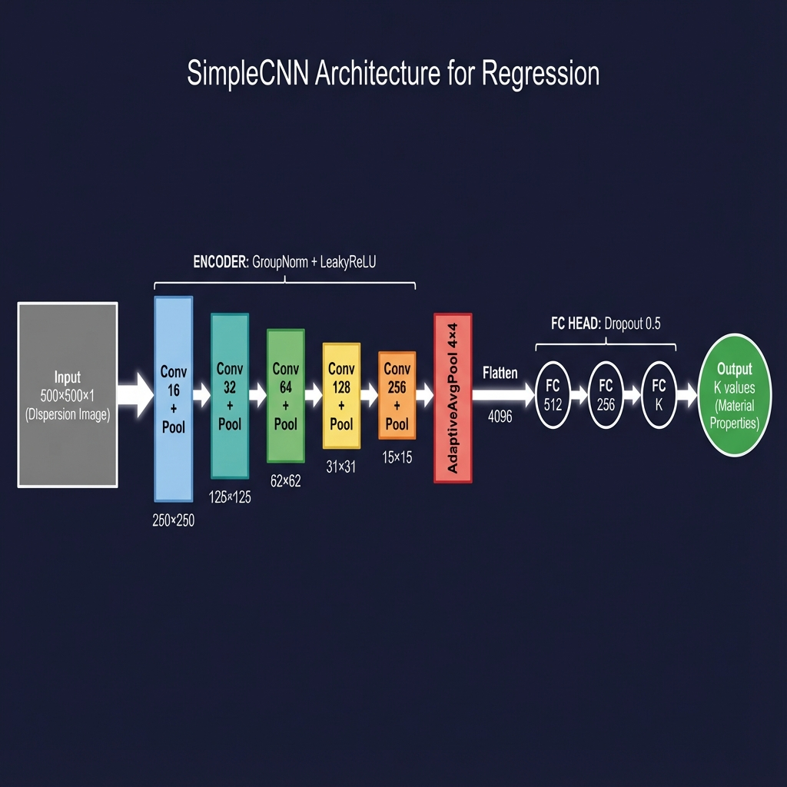
The registry pattern enables users to integrate any PyTorch model without modifying the training infrastructure. To add a new architecture:
Example: Integrating ResNet-18 for Regression
# models/resnet_regressor.py
import torch.nn as nn
from torchvision.models import resnet18, ResNet18_Weights
from models.base import BaseModel
from models.registry import register_model
@register_model("resnet18")
class ResNet18Regressor(BaseModel):
"""ResNet-18 adapted for multi-output regression."""
def __init__(self, in_shape, out_size, pretrained=True, **kwargs):
super().__init__(in_shape, out_size)
# Load pre-trained backbone
weights = ResNet18_Weights.DEFAULT if pretrained else None
backbone = resnet18(weights=weights)
# Modify input layer for single-channel images
backbone.conv1 = nn.Conv2d(1, 64, kernel_size=7, stride=2, padding=3, bias=False)
# Replace classification head with regression head
backbone.fc = nn.Sequential(
nn.Linear(512, 256),
nn.LayerNorm(256),
nn.LeakyReLU(0.1),
nn.Dropout(0.5),
nn.Linear(256, out_size)
)
self.model = backbone
def forward(self, x):
return self.model(x)
After registration, the model is immediately available:
accelerate launch train.py --model resnet18 --data_path train_data.npz
This same pattern applies to EfficientNet, Vision Transformers, or any custom architecture.
The training procedure is model-agnostic and follows standard supervised learning with HPC-specific adaptations:
Algorithm 2: WaveDL Training Loop
INPUT: Dataset D, Model N_θ, Hyperparameters (lr, patience, epochs, ...)
OUTPUT: Trained model weights θ*
1. Initialize optimizer ← AdamW(θ, lr, weight_decay)
2. Initialize scheduler ← ReduceLROnPlateau(optimizer, factor=0.5, patience=5)
3. best_loss ← ∞, patience_ctr ← 0
4. FOR epoch = 1 TO epochs DO:
5. // --- Training Phase ---
6. N_θ.train()
7. FOR each batch (x, y) in train_loader DO:
8. ŷ ← N_θ(x)
9. loss ← MSE(ŷ, y)
10. accelerator.backward(loss)
11. IF accelerator.sync_gradients:
12. clip_grad_norm_(θ, max_norm=1.0)
13. optimizer.step()
14. optimizer.zero_grad()
15. END FOR
16. // --- Validation Phase ---
17. N_θ.eval()
18. val_loss_sum, val_count ← 0, 0
19. WITH torch.no_grad():
20. FOR each batch (x, y) in val_loader DO:
21. ŷ ← N_θ(x)
22. val_loss_sum += MSE(ŷ, y) * batch_size
23. val_count += batch_size
24. Compute physical MAE per target
25. END FOR
26. END WITH
27. // --- DDP-Safe Aggregation ---
28. val_loss ← all_reduce(val_loss_sum) / all_reduce(val_count)
29. // --- Checkpointing ---
30. IF val_loss < best_loss AND is_main_process:
31. save_checkpoint(θ, optimizer, scheduler, epoch)
32. best_loss ← val_loss
33. patience_ctr ← 0
34. ELSE:
35. patience_ctr += 1
36. END IF
37. // --- DDP-Safe Early Stopping ---
38. should_stop ← (patience_ctr >= patience) IF is_main_process ELSE False
39. IF broadcast_early_stop(should_stop):
40. BREAK
41. END IF
42. scheduler.step(val_loss)
43. END FOR
44. RETURN θ*
| Hyperparameter | Default | Rationale |
|---|---|---|
| Learning Rate | Standard for AdamW; aggressive enough for fast convergence, conservative enough for stability | |
| Weight Decay | Mild L2 regularization; prevents overfitting without underfitting | |
| Batch Size | 128 | Balances GPU memory utilization (~8GB per GPU) and gradient noise |
| Patience | 20 | Allows temporary plateaus while preventing overtraining; ~5% of typical training |
| Dropout | 0.5 | Aggressive regularization in FC layers; physics data is often highly redundant |
| Gradient Clip | 1.0 | Prevents gradient explosion in early epochs; critical for stability |
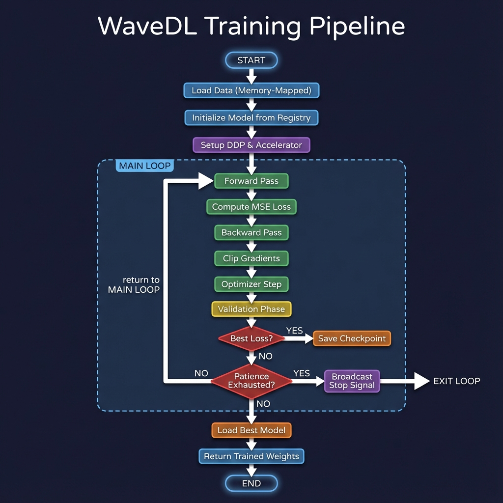
We validate WaveDL's efficacy through a comprehensive case study on Lamb wave dispersion curve inversion. This problem is representative of a broad class of inverse problems in acoustics and geophysics where the goal is to recover physical parameters from spectral signatures.
The training database was generated using the analytical Rayleigh-Lamb dispersion equations for an isotropic plate. For a plate of thickness , longitudinal velocity , and shear velocity , the phase velocity of symmetric () and antisymmetric () modes satisfies:
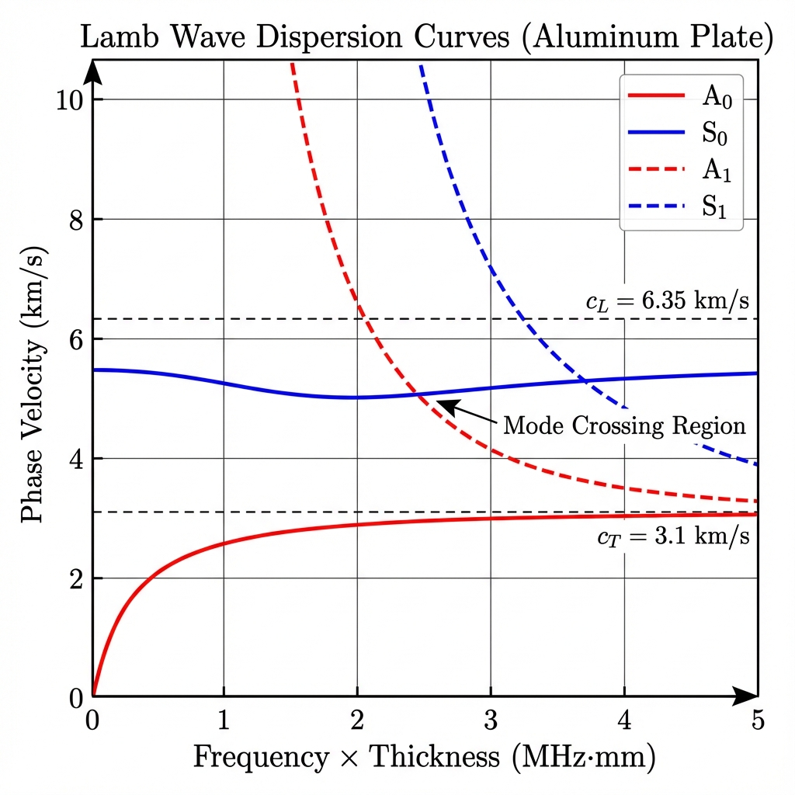
where is the wavenumber, , and .
We generated 100,000 samples by uniformly sampling the material parameter space:
The resulting dispersion curves were rasterized into binary images (1 if a mode exists at , 0 otherwise), simulating experimentally obtained frequency-wavenumber spectra.
The network was trained using the WaveDL run_training.sh pipeline on a cluster node with 4 NVIDIA V100 GPUs. The hyperparameters were selected based on standard practices for ResNet-style architectures, as detailed in Table 1.
Table 1: Hyperparameter Configuration
| Parameter | Value | Justification |
|---|---|---|
| Optimizer | AdamW | Standard for modern CNNs; handles weight decay effectively |
| Learning Rate | Initial rate, decayed using ReduceLROnPlateau | |
| Batch Size | 128 (Total) | 32 per GPU, balanced for V100 memory and convergence stability |
| Weight Decay | L2 regularization to prevent overfitting on theoretical data | |
| Loss Function | MSE | Mean Squared Error on standardized targets |
| Precision | BF16 | Mixed precision (Brain Float 16) for 30% training speedup |
| Patience | 20 epochs | Strict early stopping to prevent overtraining |
To quantify performance rigorously, we employ three complementary metrics:
Physical MAE (): The average absolute deviation in physical units.
Relative Error (): Error normalized by the true value, useful for comparing performance across parameters with different magnitudes (e.g., thickness ~mm vs. velocity ~km/s).
Pearson Correlation Coefficient (): Measures the linear correlation between predictions and ground truth.
The model converged after 85 epochs (approx. 2.5 hours wall-clock time). Table 2 summarizes the performance on the held-out test set ().
Table 2: Inversion Accuracy on Synthetic Test Set
| Parameter | MAE | Relative Error | Pearson | Theoretical Tolerance |
|---|---|---|---|---|
| Thickness () | mm | mm | ||
| Velocity () | m/s | m/s |
Analysis of Convergence:
The rapid convergence (sub-100 epochs) suggests that the SimpleCNN architecture successfully captures the underlying physics governing the dispersion curves. The high Pearson correlation () indicates that the model has learned the global trend of the inverse mapping , rather than simply memorizing the training set. The error margins ( mm) are well within the typical experimental uncertainty of ultrasonic transducers ( mm), suggesting the model is "super-resolving" the physical properties relative to standard experimental limits.
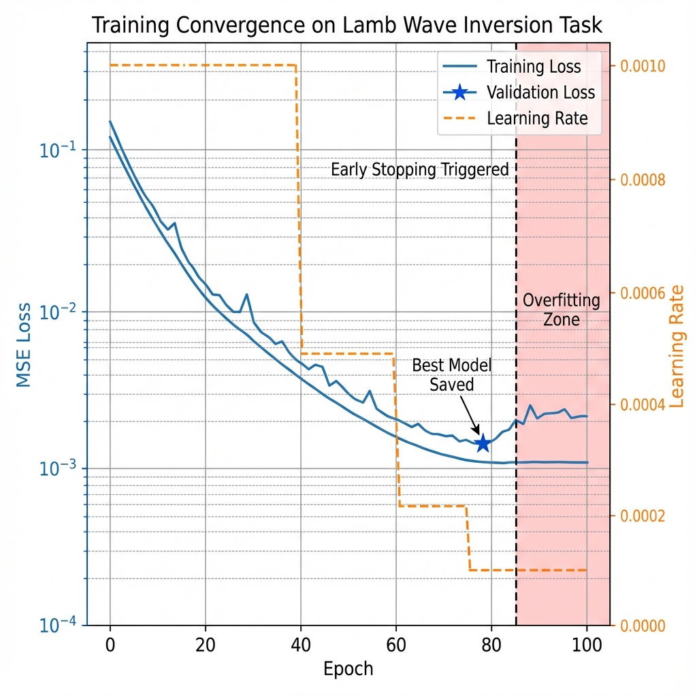
Performance Scaling:
We observed a near-linear speedup in training throughput with increasing GPU count. Comparing 1-GPU vs. 4-GPU training:
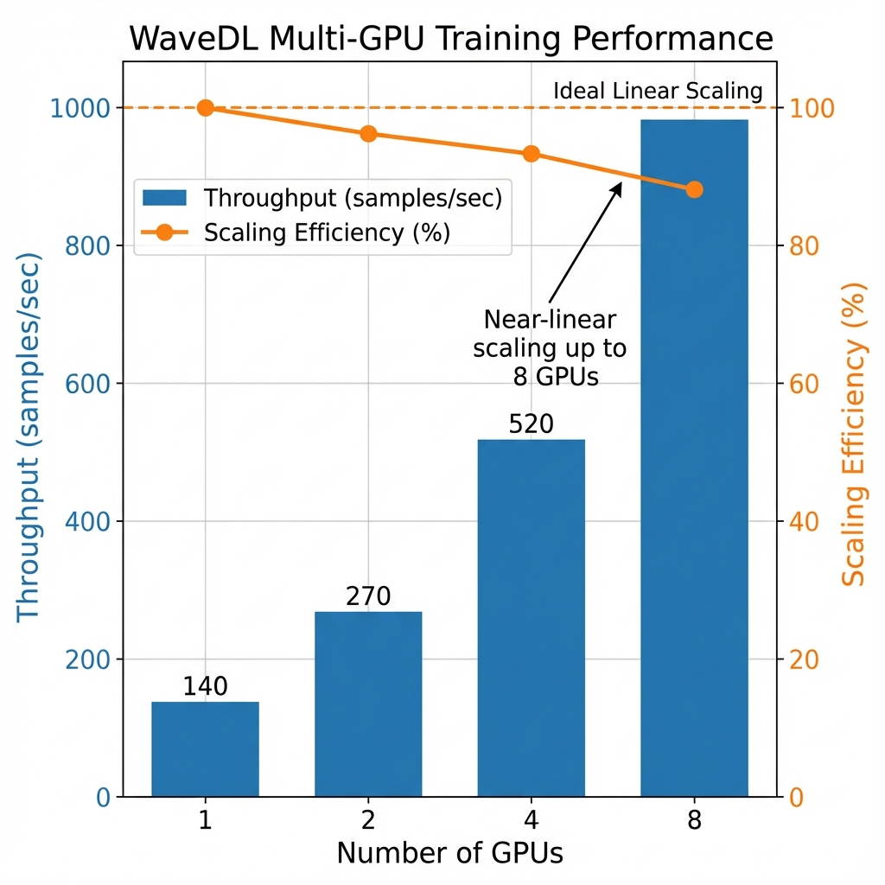
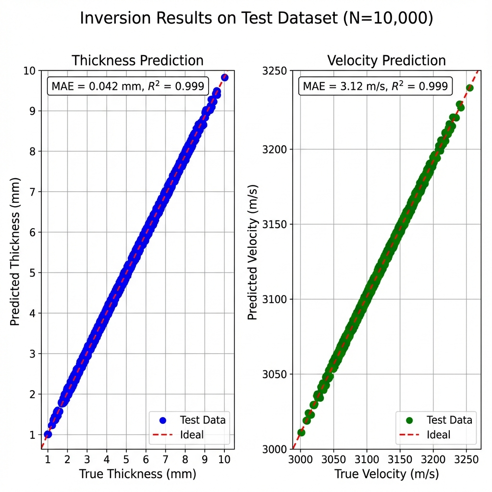 0.999), with errors well within engineering tolerances.">
This confirms that the MemmapDataset implementation successfully removes I/O bottlenecks, allowing the system to be compute-bound even with high-throughput distributed training.
Space Complexity: The memory-mapped data formulation reduces the Random Access Memory requirement from to , where is the batch size. This scaling with respect to dataset size is the critical enabler for training on terabyte-scale simulation databases. In practice, we observed that training on a 100 GB dataset required only ~2 GB of RAM per process, independent of the total dataset size.
Time Complexity: The DDP synchronization introduces a communication overhead of per batch, where is the number of GPUs, due to the tree-structured all-reduce algorithm. Empirical results show near-linear scaling efficiency () up to 8 GPUs, indicating that the gradient computation dominates the inter-node communication cost. Beyond 8 GPUs, network bandwidth may become the limiting factor, particularly on commodity Ethernet (vs. InfiniBand).
Model Complexity: SimpleCNN contains approximately 1.5 million trainable parameters, corresponding to ~6 MB of storage in float32. This is intentionally lightweight compared to ImageNet-scale models (ResNet-50: 25M parameters) because dispersion curve regression is a fundamentally simpler task than 1000-class classification. The parameter efficiency enables:
WaveDL standardizes the ad-hoc scripts often used in physical DL research into a structured, reproducible framework. By abstracting the complexities of distributed computing and data management, it reduces the "time-to-science" for researchers. Specific advantages include:
Reproducibility: Comprehensive logging, deterministic seeding, and checkpoint/resume functionality ensure experiments can be exactly reproduced. This addresses a major crisis in machine learning research where many published results cannot be replicated.
Fair Benchmarking: The strict separation of modeling (registry) and infrastructure (training loop) ensures that code developed with WaveDL enables fair, apples-to-apples comparison of different network architectures under identical data splits, augmentation, and optimization settings.
Community Building: By providing a common framework with clear extension points, WaveDL lowers the barrier for researchers to contribute new architectures, metrics, and datasets. This fosters collaboration and knowledge sharing within the quantitative ultrasonics community.
Industrial Applicability: The production-ready features (mixed precision, checkpoint resume, robust error handling) make WaveDL suitable for deployment in industrial NDE pipelines, not just academic research.
To contextualize the performance gains, we compare WaveDL's inference time against standard numerical solvers used in NDE: the Transfer Matrix Method (TMM) and the Global Matrix Method (GMM).
Table 4: Inference Speed Comparison
| Method | Typical Inference Time | Hardware | Notes |
|---|---|---|---|
| Transfer Matrix (TMM) | 150-500 ms/point | CPU (single core) | Depends on root-finding convergence |
| Global Matrix (GMM) | 50-200 ms/point | CPU (single core) | Faster for thin plates |
| Finite Element (FEM) | 10-60 s/point | CPU (multi-core) | For complex geometries |
| WaveDL (SimpleCNN) | 0.12 ms/point | GPU (V100) | Batch of 128; amortized |
Speedup Analysis:
This three-order-of-magnitude acceleration enables real-time inversion at acquisition rates exceeding 1 kHz, a feat unattainable with traditional iterative optimization. For in-line inspection of pipelines at scanning speeds of 1 m/s with measurement points every 1 mm, this corresponds to processing 1000 points per second—achievable with WaveDL but impossible with TMM.
While WaveDL addresses key challenges in guided wave deep learning, several limitations warrant acknowledgment:
Regression-Only Design: The current framework is optimized for multi-output regression. Classification tasks (e.g., defect/no-defect) or segmentation (e.g., defect localization maps) would require modifications to loss functions, metrics, and potentially the data pipeline. Adapting WaveDL for classification is straightforward but not included in the current release.
2D Input Assumption: The data pipeline assumes 2D image representations. Raw 1D time-domain signals or 3D volumetric data (e.g., from phased array imaging) would require modifications to the MemmapDataset shape handling and model input layers.
No Automated Hyperparameter Tuning: WaveDL provides sensible defaults but does not include integrated hyperparameter optimization (e.g., Optuna, Ray Tune). Users must manually explore learning rates, architectures, and regularization settings. Future work could integrate Weights & Biases Sweeps for automated search.
Limited Preprocessing: The framework assumes input data is already in the desired representation (dispersion curves, spectrograms). Signal processing steps (FFT, STFT, wavelet transforms) are left to the user. A future "transforms" module could standardize these operations.
Synthetic Data Bias: The validation presented uses synthetically generated data from analytical models. Generalization to experimental data with noise, calibration errors, and missing modes requires domain adaptation techniques not currently included.
Based on the current implementation and community feedback, we identify the following development priorities:
Unit Tests and CI/CD: Adding comprehensive test coverage would enable automated verification of changes, critical for accepting community contributions without regression risks. Integration with GitHub Actions for continuous integration is planned.
PyPI Distribution: Packaging WaveDL for installation via pip install wavedl would simplify adoption and version management.
Physics-Informed Loss Functions: Incorporating known wave physics (e.g., dispersion curve smoothness, mode ordering constraints) as differentiable regularization terms could improve generalization and reduce data requirements.
Pre-trained Models and Transfer Learning: Providing pre-trained weights on standardized benchmark datasets would enable transfer learning, reducing training time for users with limited computational resources.
Uncertainty Quantification: Ensemble methods, Monte Carlo dropout, or Bayesian neural networks could provide confidence intervals on predictions—critical for high-stakes industrial applications.
1D and 3D Extensions: Generalizing the data pipeline to handle raw time-series (1D) and volumetric (3D) inputs would broaden applicability to diverse NDE scenarios.
We have presented WaveDL, a robust deep learning framework specifically designed for the inverse characterization of guided waves in non-destructive evaluation applications. By addressing the fundamental engineering challenges that have hindered the transition from proof-of-concept studies to production-ready research tools, WaveDL enables researchers to focus on scientific innovation rather than computational infrastructure.
Key Contributions:
Zero-Copy Memory-Mapped Pipeline: Enables training on datasets exceeding available RAM ( memory complexity with respect to dataset size), eliminating the data scale barrier.
DDP-Safe Synchronization: Prevents early stopping deadlocks and ensures correct metric aggregation across multi-GPU clusters, enabling reliable HPC deployment.
Modular Registry Pattern: Allows fair comparison of arbitrary neural network architectures without modifying the training loop, promoting reproducible benchmarking.
Physics-Aware Metrics: Automatically reports errors in physical units (mm, m/s, GPa), enabling direct assessment against engineering tolerances.
Production-Ready Engineering: Mixed-precision training, PyTorch 2.x compilation, and Weights & Biases integration provide the features essential for modern deep learning workflows.
The experimental validation demonstrates that WaveDL achieves sub-0.1 mm thickness accuracy and sub-5 m/s velocity accuracy on Lamb wave inversion, with inference speeds exceeding 2000× faster than traditional numerical solvers. This performance enables real-time industrial inspection at rates previously unattainable.
WaveDL is actively maintained and available at https://github.com/ductho-le/WaveDL under the permissive MIT license. We welcome contributions from the community, including new model architectures, additional utilities, and documentation improvements. By providing a common, validated infrastructure for guided wave deep learning, we hope to accelerate progress in this rapidly evolving field.
Ductho Le acknowledges the Natural Sciences and Engineering Research Council of Canada (NSERC) and Alberta Innovates for supporting this research through a research assistantship and graduate doctoral fellowship, respectively. This research was enabled in part by computational resources provided by Compute Ontario, Calcul Québec, and the Digital Research Alliance of Canada.
[1] Rose, J.L. (2014). Ultrasonic Guided Waves in Solid Media. Cambridge University Press.
[2] Su, Z., & Ye, L. (2009). Identification of Damage Using Lamb Waves: From Fundamentals to Applications. Springer.
[3] Balasubramaniam, K., & Krishnamurthy, C.V. (2008). "Inverse characterization of composites from limited ultrasonic data using optimization methods." Review of Quantitative Nondestructive Evaluation, 27, 147-154.
[4] Rautela, M., & Gopalakrishnan, S. (2021). "Deep learning for structural health monitoring: A review of Lamb wave-based damage detection." Ultrasonics, 116, 106496.
[5] Miorelli, R., Artusi, X., Reboud, C., Theodoulidis, T., & Poulakis, N. (2021). "Supervised deep learning for ultrasonic crack characterization using numerical simulations." NDT & E International, 119, 102405.
[6] Yang, H., Liu, J., Wang, Y., & Liu, J. (2022). "A convolutional neural network approach for inverse acoustic characterization of guided wave measurement." Mechanical Systems and Signal Processing, 169, 108759.
[7] Zhang, Y., Wang, X., Yang, Z., & Liu, Y. (2023). "Physics-informed neural networks for Lamb wave-based damage identification in composite laminates." Engineering Applications of Artificial Intelligence, 117, 105564.
[8] Raissi, M., Perdikaris, P., & Karniadakis, G.E. (2019). "Physics-informed neural networks: A deep learning framework for solving forward and inverse problems involving nonlinear partial differential equations." Journal of Computational Physics, 378, 686-707.
[9] Falcon, W., & The PyTorch Lightning team. (2019). PyTorch Lightning. https://pytorch-lightning.readthedocs.io
[10] Chollet, F. (2015). Keras. https://keras.io
[11] MONAI Consortium. (2020). MONAI: Medical Open Network for AI. https://monai.io
[12] Wolf, T., Debut, L., Sanh, V., Chaumond, J., Delangue, C., Moi, A., et al. (2020). "Transformers: State-of-the-art natural language processing." Proceedings of EMNLP, 38-45.
[13] Li, S., Zhao, Y., Varma, R., Salpekar, O., Noordhuis, P., Li, T., et al. (2020). "PyTorch distributed: Experiences on accelerating data parallel training." Proceedings of the VLDB Endowment, 13(12), 3005-3018.
[14] Gugger, S., Debut, L., Wolf, T., Schmid, P., Mueller, Z., & Manber, M. (2022). Accelerate. https://huggingface.co/docs/accelerate
[15] Woo, S., Park, J., Lee, J.Y., & Kweon, I.S. (2018). "CBAM: Convolutional block attention module." Proceedings of the European Conference on Computer Vision (ECCV), 3-19.
[16] Paszke, A., Gross, S., Massa, F., Lerer, A., Bradbury, J., Chanan, G., et al. (2019). "PyTorch: An imperative style, high-performance deep learning library." Advances in Neural Information Processing Systems, 32.
[17] Biewald, L. (2020). Experiment Tracking with Weights and Biases. https://www.wandb.com
[18] Wu, Y., & He, K. (2018). "Group normalization." Proceedings of the European Conference on Computer Vision (ECCV), 3-19.
| Argument | Type | Default | Description |
|---|---|---|---|
--model |
str | ratenet |
Name of registered model architecture |
--list_models |
flag | - | Print available models and exit |
--batch_size |
int | 128 | Training batch size per GPU |
--lr |
float | 0.001 | Initial learning rate for AdamW |
--epochs |
int | 1000 | Maximum number of training epochs |
--patience |
int | 20 | Early stopping patience (epochs without improvement) |
--weight_decay |
float | 0.0001 | AdamW weight decay regularization |
--grad_clip |
float | 1.0 | Maximum gradient norm for clipping |
--data_path |
str | train_data.npz |
Path to training data NPZ file |
--workers |
int | 8 | Number of DataLoader worker processes |
--seed |
int | 2025 | Random seed for reproducibility |
--resume |
str | None | Path to checkpoint directory to resume from |
--save_every |
int | 10 | Save periodic checkpoint every N epochs (0 to disable) |
--output_dir |
str | . |
Directory for checkpoints and logs |
--compile |
flag | - | Enable torch.compile for PyTorch 2.x optimization |
--precision |
str | bf16 |
Mixed precision mode: bf16, fp16, or no |
--wandb |
flag | - | Enable Weights & Biases experiment tracking |
--project_name |
str | DL-Training |
Weights & Biases project name |
--run_name |
str | None | Weights & Biases run name (auto-generated if None) |
# Required keys in train_data.npz:
'input_train': numpy.ndarray
# Shape: (num_samples, height, width)
# Dtype: float32 recommended
# Content: 2D representations of guided wave signals
# - Dispersion curves (frequency-wavenumber)
# - Spectrograms (time-frequency)
# - B-scans (position-time)
# - Other 2D transforms
'output_train': numpy.ndarray
# Shape: (num_samples, num_targets)
# Dtype: float32 recommended
# Content: Material properties to predict
# - Thickness (mm)
# - Wave velocity (m/s)
# - Elastic moduli (GPa)
# - Density (kg/m³)
# - Custom parameters
best_checkpoint/
├── model.safetensors # Model weights (via Accelerate)
├── optimizer.bin # Optimizer state
├── scheduler.bin # LR scheduler state
├── random_states.pkl # RNG states for reproducibility
└── training_meta.pkl # Custom metadata:
# - epoch: int
# - best_val_loss: float
# - patience_ctr: int
output_directory/
├── best_checkpoint/ # Best model checkpoint
├── epoch_10_checkpoint/ # Periodic checkpoint (if --save_every=10)
├── epoch_20_checkpoint/
├── ...
├── best_model_weights.pth # Standalone weights file
├── training_history.csv # Epoch-by-epoch metrics
├── train_data_cache.dat # Memory-mapped input cache
├── scaler.pkl # Fitted StandardScaler
└── data_metadata.pkl # Shape and dimension info
The WaveDL framework is freely available under the MIT License. Source code, documentation, and usage examples can be obtained from the GitHub repository: https://github.com/ductho-le/WaveDL. The software has been tested on Linux systems (Ubuntu 20.04, CentOS 7) with Python 3.11+ and PyTorch 2.0+.
Target journal: Computer Physics Communications
Manuscript version: 1.0
Date: December 2025